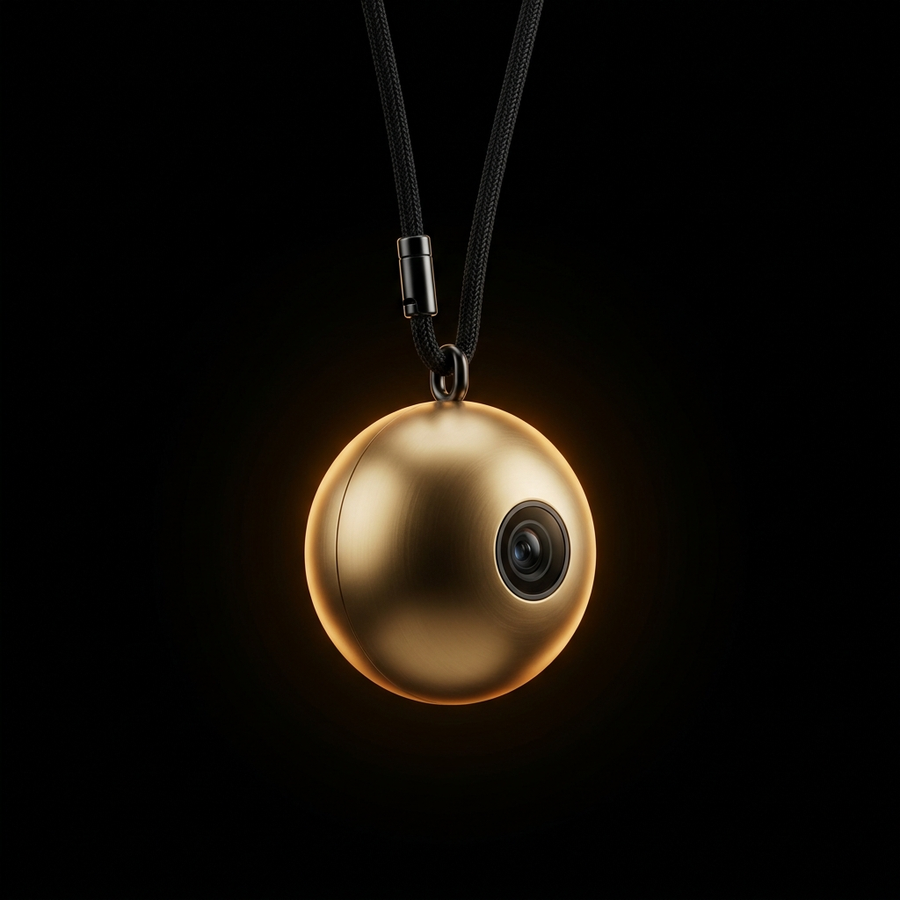

Always listening
Voice transcribed in under 500ms. No app. No buttons.

Voice transcribed in under 500ms. No app. No buttons.
Point at anything. Aura sees and stores what you're looking at.
Every conversation is indexed. Ask in plain language, get the memory back.
Not a computer. Not a phone. Something worn.
Not a computer
Not a distraction
A presence
Standard off-the-shelf parts. No markup. MIT licensed.

Fork the repo, order the parts, and follow the build guide. No soldering experience required for the base build.